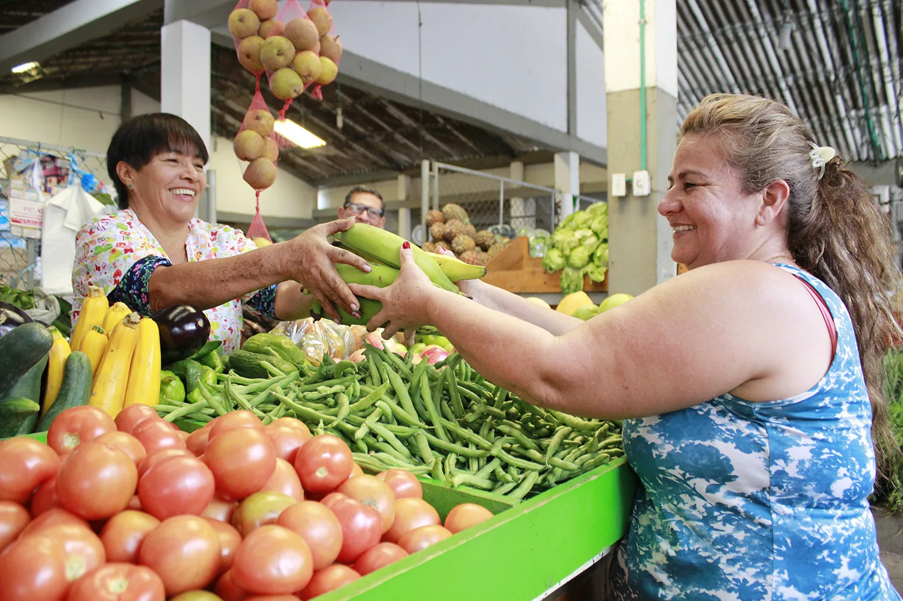

Conecta comunidades
Acerca a las personas a la educación, la salud, el trabajo y otros servicios esenciales.
Caminos del Tigre
Los caminos hacen parte de nuestra vida: por ellos llegan los alimentos, las personas van a estudiar, las familias acceden a servicios y las regiones se encuentran.
Un programa del Gobierno nacional. Una página para toda la ciudadanía. Un registro para los actores que estén habilitados.
Fotografía institucional · Invías
El programa
Caminos del Tigre es un programa del Gobierno nacional que busca mejorar la conectividad de Colombia, con especial atención a las vías rurales y a las conexiones entre comunidades, municipios y regiones.
Para hacerlo, reúne las necesidades de los territorios, las analiza y establece prioridades que permitan preparar y gestionar posibles intervenciones.

Acerca a las personas a la educación, la salud, el trabajo y otros servicios esenciales.
Reúne información de los caminos para entender su importancia y lo que representan para cada región.
Analiza las necesidades y establece prioridades para gestionar posibles intervenciones.



Cómo funciona
Cada reporte sigue un proceso para conocer el camino, entender su importancia y evaluar qué puede hacerse.
Los actores habilitados reportan dónde está el corredor y qué situación afecta la movilidad.
Organizamos los datos, verificamos lo reportado y revisamos posibles restricciones o información faltante.
Analizamos el corredor junto con información del territorio para entender a quién conecta y qué representa para la región.
Valoramos las necesidades con criterios técnicos, sociales, territoriales y económicos, junto con el mecanismo de participación que se establezca.
Para los proyectos priorizados revisamos estudios disponibles y definimos qué soluciones o diseños se necesitan.
Analizamos financiación, requisitos y alternativas para preparar los proyectos que puedan avanzar.
Solo los proyectos que cumplan las condiciones correspondientes podrán pasar a contratación y ejecución.
Importante: Registrar una necesidad no garantiza que el camino sea priorizado ni que se ejecute una obra.
A quién está dirigido
El programa está pensado para los territorios y las personas que dependen de sus caminos: comunidades rurales, familias, estudiantes, productores, comerciantes y quienes necesitan desplazarse entre veredas, municipios y regiones.
¿A quién beneficia?
Comunidades rurales, familias, estudiantes, productores, comerciantes y personas que necesitan desplazarse entre territorios.
¿Quiénes pueden reportar?
Los actores que autorice el programa, como organizaciones comunitarias, entidades territoriales, gremios y otros canales institucionales habilitados.
Antes de comenzar, verifica si tu organización puede presentar el reporte.
Cobertura
Caminos del Tigre tiene alcance nacional y pone especial atención en los caminos rurales y las conexiones que unen comunidades, municipios y regiones. Las necesidades reportadas se revisan de acuerdo con las condiciones y criterios del programa.
Respuestas claras
Información esencial antes de iniciar el registro.
Es un programa del Gobierno nacional para fortalecer la conectividad vial de Colombia, con prioridad en las vías rurales y la integración territorial.
No. Tiene alcance sobre la red vial nacional y prioriza las necesidades de conectividad rural y territorial, conforme a sus reglas de operación.
Las personas y territorios que necesitan mejores conexiones para estudiar, trabajar, acceder a servicios y transportar productos.
El registro está previsto para actores habilitados. La ciudadanía puede acercar sus necesidades a las organizaciones y autoridades que correspondan.
La ubicación del corredor, una descripción clara de la necesidad y los datos del actor autorizado que presenta el reporte.
No es un requisito para que la necesidad sea considerada en la priorización. Si existen estudios, podrán aportarse según las reglas del formulario.
La información se recibe y revisa para continuar con las etapas de análisis del programa.
Se analizan las condiciones del territorio, la conectividad y los posibles beneficios sociales y económicos, junto con el mecanismo de participación definido.
No necesariamente. El registro permite dar a conocer una necesidad, pero no garantiza financiación ni ejecución.
La cantidad y modalidad de registros dependerán de las reglas definitivas del formulario.
La página mostrará una confirmación de envío. El número de radicado y el seguimiento dependerán de las funcionalidades habilitadas.
El equipo responsable determinará el tratamiento aplicable y la información que se comunicará al peticionario.
En los canales oficiales que se publiquen en la sección Contacto.
Formulario de registro
Si representas un actor habilitado, comparte la información básica de la necesidad. No necesitas describir una solución de ingeniería.
Tipo de organización, entidad u organización, nombre y rol del contacto, correo y teléfono.
Departamento, municipio, vereda o sector, referencia del corredor y ubicación aproximada.
Descripción de la dificultad, tramos afectados y soportes opcionales si se habilitan.
Resumen editable, tratamiento de datos, confirmación de veracidad y envío.
Al enviar: Recibimos tu reporte. La información pasará a revisión. Este envío no significa que una obra haya sido aprobada.
Contacto
¿Tienes preguntas sobre el programa o necesitas ayuda para reportar una necesidad? Consulta los canales oficiales de atención.
Información en preparación
Este módulo no promete una respuesta inmediata y no recopila información mientras los canales institucionales están en validación.